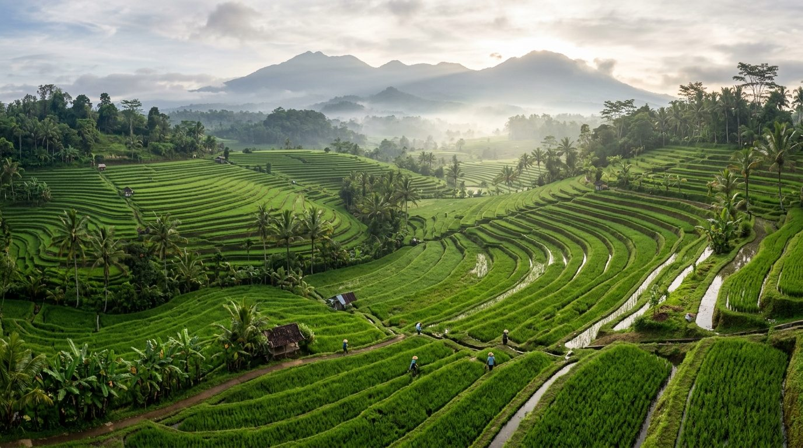
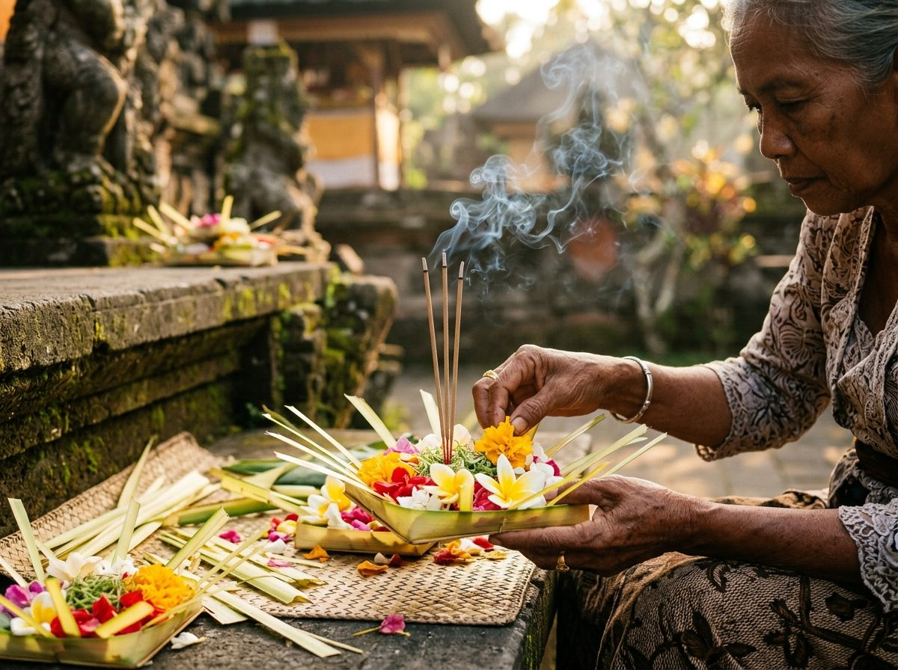
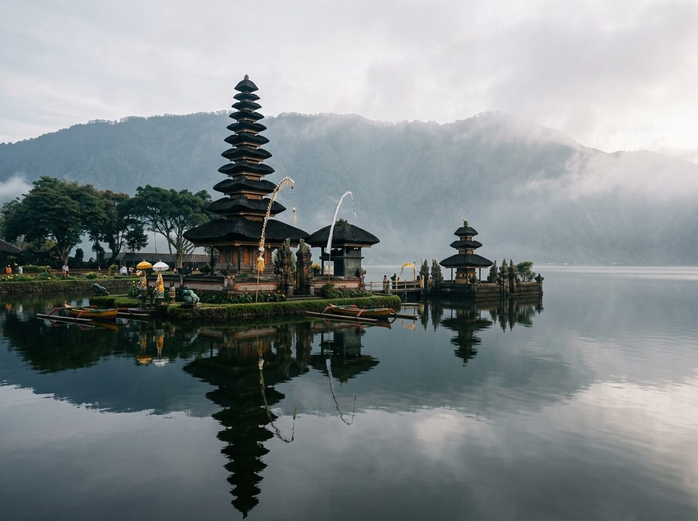
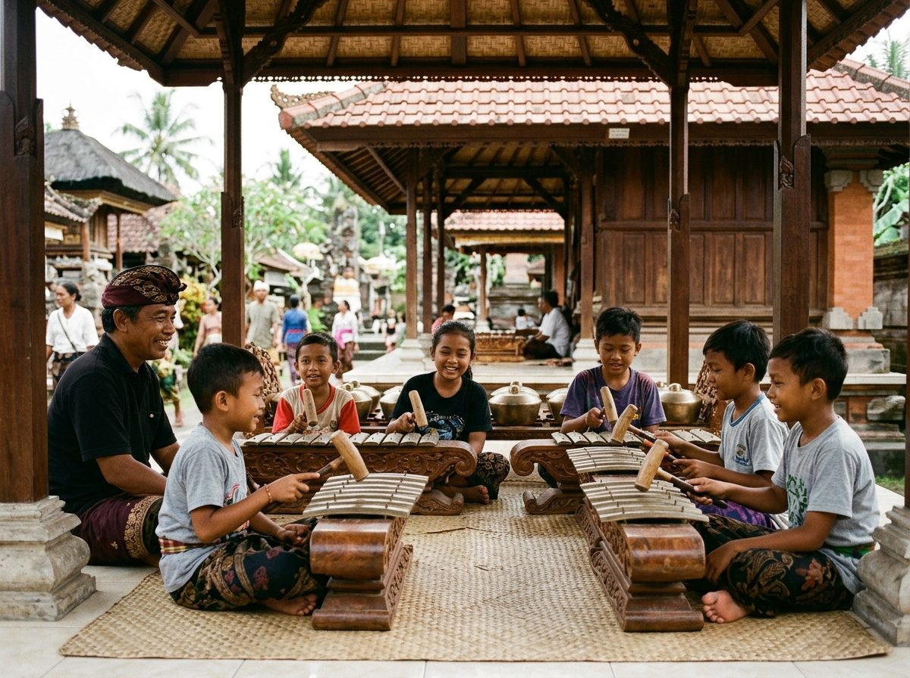
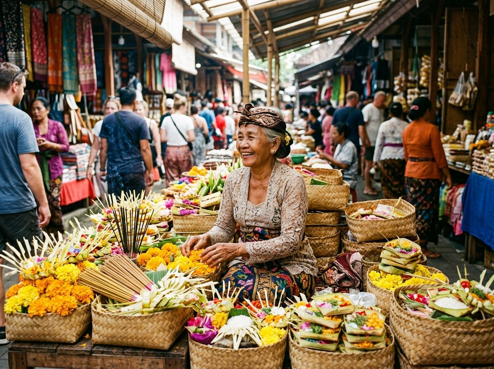

Parhyangan
Hubungan spiritual antara manusia dan Sang Hyang Widhi Wasa (Tuhan). Diwujudkan lewat persembahan upacara, perawatan pura kahyangan jagat, dan doa sehari-hari.
Discover the Soul of Bali
Kumpulan tari, gamelan, kerajinan, naskah lontar, dan situs suci Bali, yang sampai sekarang masih dijalankan di desa-desa adat.
Kosmologi dan filosofi Bali
Orang Bali memandang hidup sebagai dua hal yang berlawanan tapi saling melengkapi, seperti siang dan malam, suci dan biasa. Itu disebut Rwa Bhineda (dua hal yang berbeda). Tri Hita Karana (tiga penyebab kesejahteraan) mengatur tiga hubungan yang dijaga: dengan Tuhan, sesama manusia, dan alam.
Hubungan spiritual antara manusia dan Sang Hyang Widhi Wasa (Tuhan). Diwujudkan lewat persembahan upacara, perawatan pura kahyangan jagat, dan doa sehari-hari.
Hubungan antar sesama manusia. Wujudnya tampak dalam Menyama Braya (merasa bersaudara), musyawarah di bale banjar, dan gotong royong ngayah.
Hubungan manusia dengan alam sekitar. Dicerminkan dalam pembagian air irigasi Subak, upacara Tumpek Wariga untuk tumbuhan, dan perlindungan hutan suci.
Seni gerak upacara dan pertunjukan
Tari Wali bagian dari upacara inti di jeroan pura, Tari Bebali mengiringi jalannya upacara di jaba tengah, dan Tari Balih-balihan untuk seni pertunjukan di jaba sisi.
Kriya undagi dan sangging
Keterampilan kriya tangan diwariskan turun-temurun untuk membuat perlengkapan yadnya (upacara persembahan), bangunan pura, dan kain adat.
Pura dan tata ruang
Sembilan pura penjuru mata angin menjaga pulau Bali, berpadu dengan tata ruang hulu-teben (arah gunung dan laut) serta jaringan irigasi subak.
Karangasem, lereng Gunung Agung
Pura terbesar di Bali yang terletak di lereng Gunung Agung. Menjadi pusat peribadatan utama umat Hindu Bali sejak abad ke-10.
Tabanan, pesisir laut selatan
Pura di atas batu karang tempat Dang Hyang Nirartha dulu bertapa. Pura ini memuja penguasa laut dan berdiri di tepi laut selatan Tabanan.
Kuta Selatan, tebing karang 70 meter
Berdiri di ujung tebing karang setinggi 70 meter di semenanjung selatan. Pura ini memuja Dewa Rudra sebagai pelindung arah barat daya.

Jatiluwih, Tabanan
Sistem pengairan sawah terasering berlandaskan Tri Hita Karana sejak abad ke-11. Mengatur pembagian air secara musyawarah dan adil.
Bangli, kawasan desa bambu
Desa adat di Bangli yang mempertahankan tata ruang Tri Mandala (tiga zona ruang) dengan deretan rumah bambu seragam.
Tampak Siring, Gianyar
Pura mata air di Gianyar peninggalan abad ke-10. Tempat umat menjalankan tradisi melukat (upacara pembersihan diri dengan air suci).
Dokumentasi etnografi
Kehidupan tradisi yang berlangsung tiap hari: merangkai sesaji di fajar hari, mengalirkan air di pematang sawah, dan anak-anak berlatih tabuh di balai banjar.

Yadnya harian
Persembahan bunga dan daun pisang yang disiapkan setiap pagi di pelataran rumah warga.
Warisan Dunia UNESCO
Petani menggarap sawah berundak Jatiluwih dengan sistem pengairan subak yang dipimpin pekaseh.

Pura danau
Pura pelinggih di tepi danau yang memuliakan Dewi Danu sebagai penguasa air dan kesuburan.

Regenerasi penabuh
Latihan tabuh secara langsung di balai banjar dengan metode maguru panggul seusai sekolah.

Pasar tradisional
Aktivitas jual beli bunga gumitir, janur kelapa, dan dupa untuk perlengkapan ritual harian warga.